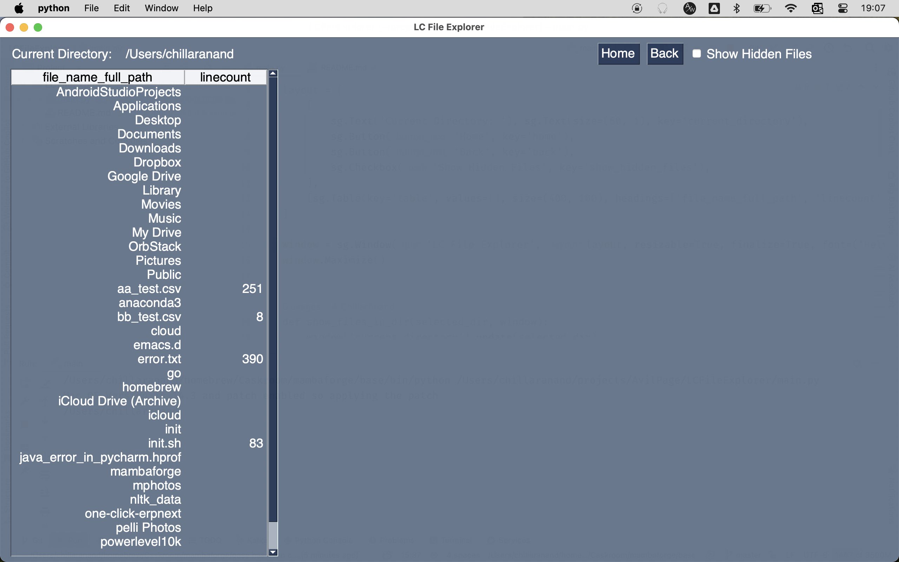

Cross Platform File Explorer in 50 lines of code
In an earlier post, I wrote about why I need a "line count" column in file explorer and how I wrote a Lua script to see it in xplr file manager.
xplr has only terminal interface. It is hard for non-developers to use it. I wanted a small team to use this feature so that it will save several hours of their time. So I decided to write a cross-platform GUI app.
GUI app
Since I am familiar with PySimpleGUI, I decided to write a simple file explorer using it.

As seen in the above screenshot, the file explorer has a "Line Count" column. It is a simple Python script with ~50 lines of code.
The project is open source and source code is available at github.com/AvilPage/LCFileExplorer.
Cross Platform
A new user can't directly run this Python script on his machine unless Python is already installed. Even if Python is installed, he has to install the required packages and run it. This requires technical expertise.
To make it easy for non-tech users to run this program, I decided to use PyInstaller to create a single executable file for each platform.
I created a GitHub action to build the executable files for Windows, Linux, and macOS. The action is triggered on every push to the master branch. This will generate .exe file for Windows, .AppImage file for Linux, and .dmg file for macOS. The executable files are uploaded to the artifacts.
Conclusion
It is easy to create a cross-platform GUI app using Python and PySimpleGUI. It is also easy to distribute the apps built with Python using pyinstaller.

Chillar Anand
A blog about python, careers & life.
To contact me, send a message here.